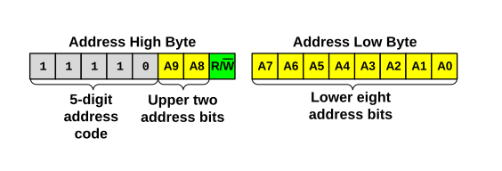

In 10-bit Addressing modes, the first two bytes following a Start condition form the
10-bit address (see Figure 37-20). The first byte (address high byte) holds the upper two address
bits, the R/W bit, and a five digit code
(11110) as defined by the I2C Specification. The second
byte (address low byte) holds the lower eight address bits. In all 10-bit Addressing
modes, the R/W value contained in the first byte must always be
zero (R/W = 0). If the host intends to read
data from the client, it must issue a Restart condition, followed by the address high
byte with R/W set (R/W =
1).
